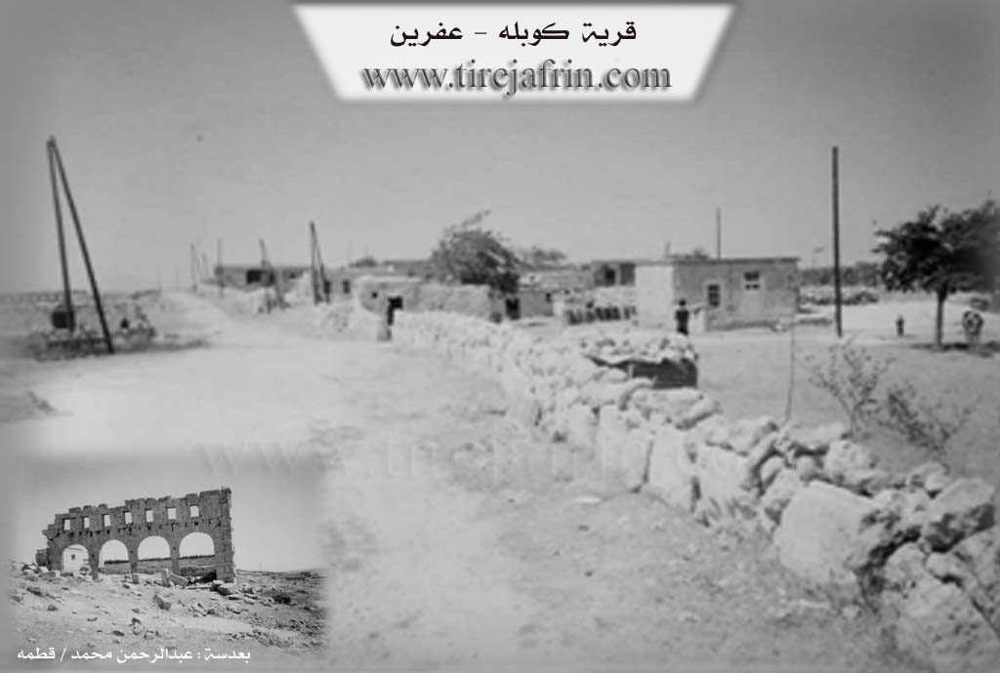

General Information
Nahiya (Subdistrict)
Efrîn
Also Known As
Gobel, Gobelê, Kobaleh, كوبله, كوبالة
Families, Clans, etc.
Xubarî
Photos

Basic Information about Gobelê
Source: Tirej Afrin
Etymology: A composite name of two Kurdish words: "Ko" meaning mountain or height, and "Bel" meaning erect. The full meaning is a high place or small plateau (ber + bend)
Foundation Date/Period: 40 years old
Summaries
I. Summary from TirejAfrin Site (English) of Gobelê
Source: https://www.tirejafrin.com/site/kura%20afrin%20markaz-%20gobele.htm
Kobel / Gobel
According to the book جبل الكرد (عفرين) دراسة جغرافية Çiyayê Kurmênc (Efrîn): A Geographical Study by د. محمد عبدو علي Dr. Mihemed Ebdo Elî:
The name Kobel (or Gobel) is a composite of two Kurdish words: "Ko," meaning mountain or height, and "Bel," meaning erect. The full meaning is a high place or a small plateau. This corresponds to the geographical character of the location, as it stands out in the center of its surroundings. The altitude is 576 meters.
Ownership of the site belongs to the Xubarî family. The village consists of several houses belonging to livestock herders who settled there recently; their language is Arabic. The village contains ancient Greek ruins, which include a church and huge stones from buildings, with some parts still standing.
According to the book عفرين .... نهرها وروابيها الخضراء Efrîn... Her River and Her Green Hills by عبدالرحمن محمد Ebdulrehman Mihemed from the village of Qetme:
Kobel is a farm (mezre) in Çiyayê Lêlûn (Mount Simeon), administratively belonging to the center sub-district of the Efrîn area, Heleb governorate. It is a small farm located north of Çiyayê Lêlûn on an ancient archaeological site.
It is bordered to the north by a rugged rocky mountain range and the farms of Xalidiye and Enab; to the south by a rugged slope and the nearby Zirîqat farm; to the east by a slope, a wide plain of olive trees, and the village of Cilbul; and to the west by a slope, a deep valley stream, a rugged mountain range, and the village of Dêr Mişmiş.
The number of houses reaches 18, and the settlement is approximately 40 years old. It is modern and belongs to the village and people of Cilbul. The village has a modern electricity network and a primary school. The village gets its drinking water from artesian wells and cisterns dug next to the houses. The residents work in grain cultivation and livestock breeding.
In the southeastern side, there are rich ruins representing the remains of building walls, cathedral walls, cylindrical columns, decorated capitals, and lintels, all made of hard, trimmed limestone. In addition, there are tombs and wells cut into the rock, some of which feature Greek inscriptions dating back to the Roman and Byzantine eras. This site is accessible from the city of Efrîn and the village of Basilhaya. It is one of the archaeological sites in the Çiyayê Lêlûn range.
The village mukhtar is Mihemed Hesen.
Sources
Book: جبل الكرد (عفرين) دراسة جغرافية Çiyayê Kurmênc (Efrîn): A Geographical Study by د. محمد عبدو علي Dr. Mihemed Ebdo Elî.
Book: عفرين .... نهرها وروابيها الخضراء Efrîn... Her River and Her Green Hills by عبدالرحمن محمد Ebdulrehman Mihemed from the village of Qetme.
Prepared and executed by the manager of the Tirej Efrîn website: Ebdulrehman Hacî Osman.
20/12/2013
Foundation/Origin Information of Gobelê
The village consists of several houses for livestock herders who settled there recently.
Source: TirejAfrin Site
Possible Village Name Meaning of Gobelê
A compound of two Kurdish words: 'Ko' (mountain or elevation) and 'Bel' (upright), meaning 'elevation or small plateau'.
Source: TirejAfrin Site